Note: all figures created as part of the study “Diagnosing pediatric mitochondrial disease by exome sequencing: lessons from 2,000 suspected cases”
by Stenton et al., (in submission) led by Dr. Holger Prokisch at the Technical University of Munich.
Each of the figures on this page depicts the “pathogenic” (P) and “likely pathogenic” (LP) disease-causing variants
detected in the study.
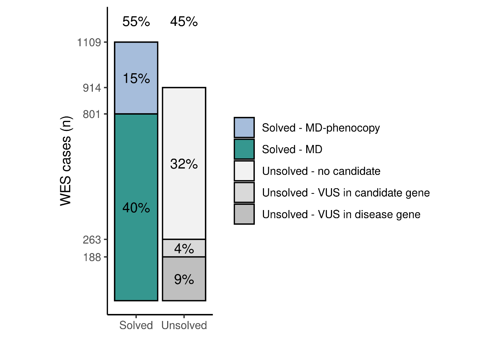
Number of solved and unsolved cases stratified by underlying molecular cause.
Abbreviations: MD, mitochondrial disease; MD-phenocopy, mitochondrial disease phenocopy.
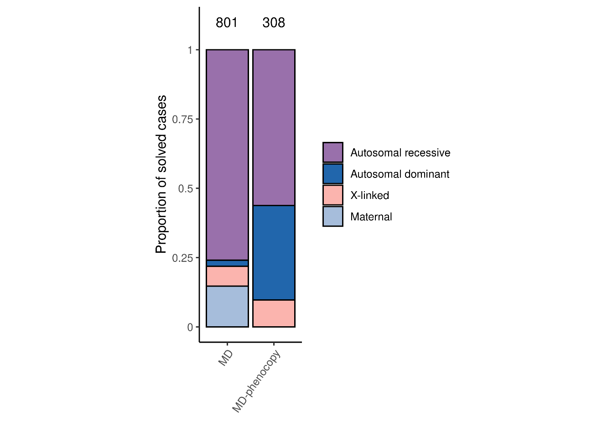
Proportion of molecular diagnoses by mode of inheritance in the MD and MD-phenocopy patients.
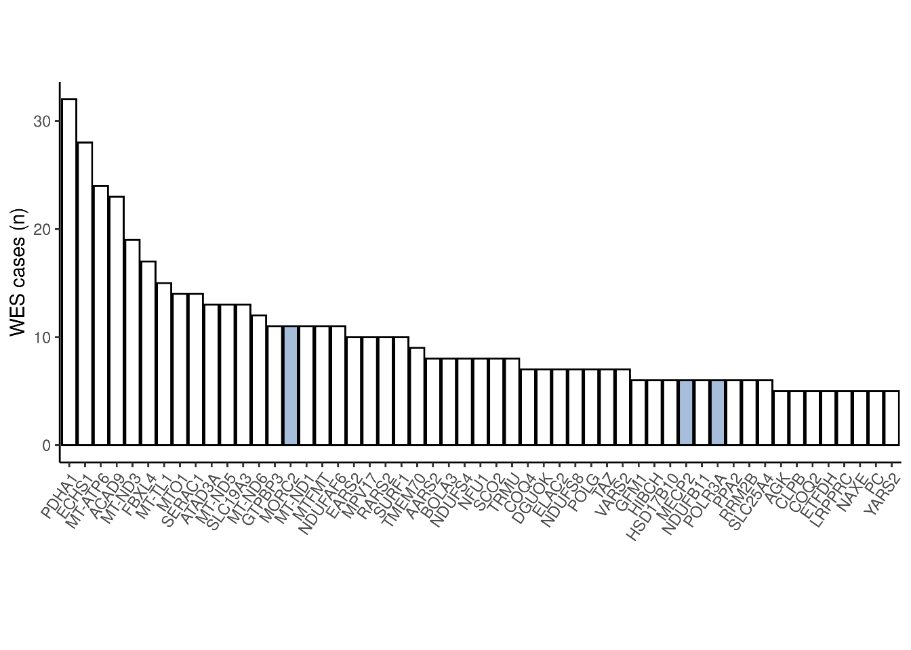
Genes in which P/LP variants were detected in ≥5 cases displayed with their frequency.
The most frequent genes with disease-causing variants in the MD-phenocopy patients are highlighted in light blue.
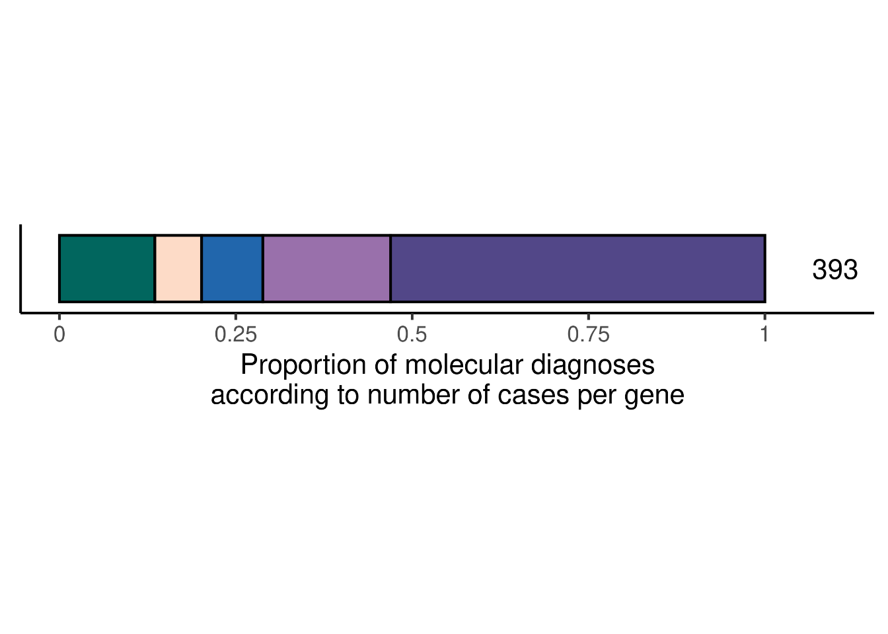
Number of cases per gene with P/LP variants.
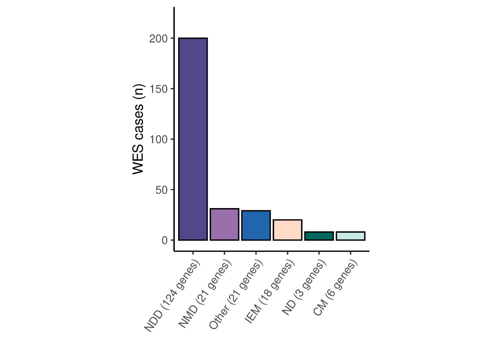
Number of MD-phenocopy cases by disease gene category.
Abbreviations: NDD, neurodevelopmental disease; NMD, neuromuscular disease; IEM, inborn errors of metabolism; ND, neurodegeneration; CM, cardiomyopathy.
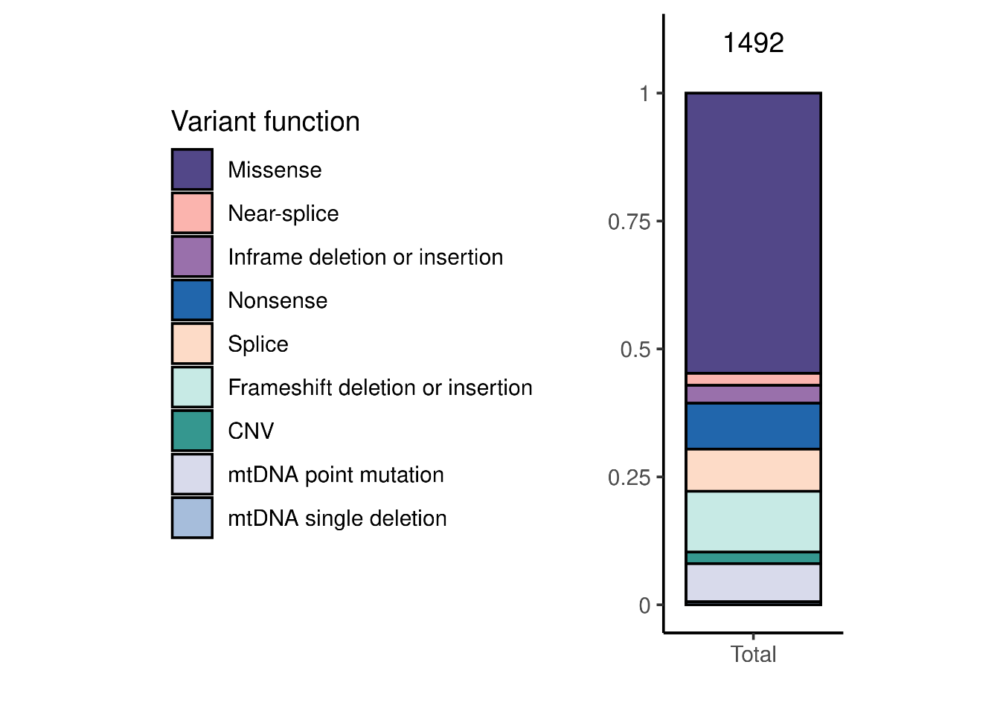
Proportion of variants of each functional class in all solved cases collectively.
Abbreviations: CNV, copy number variant; mtDNA, mitochondrial DNA.
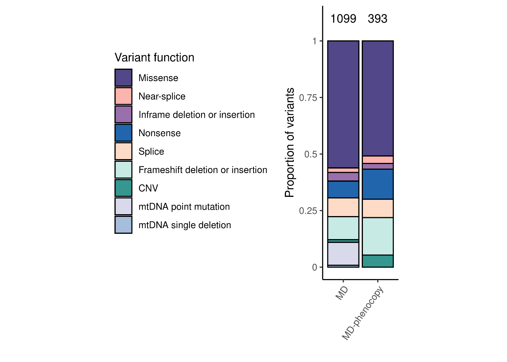
Proportion of variants of each functional class in the MD patients and MD-phenocopy patients.
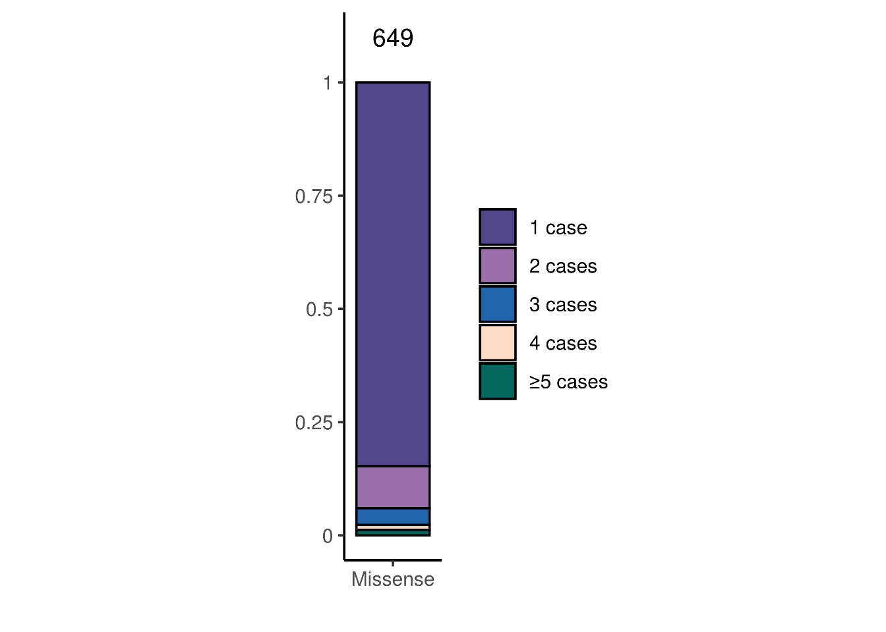
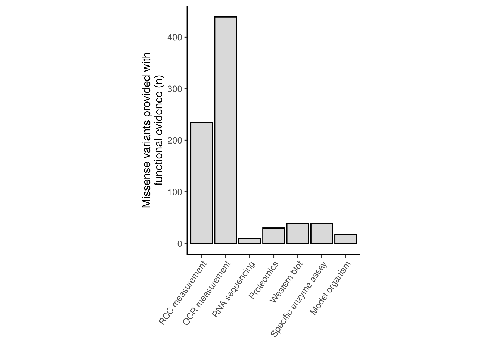
Functional validation assay leading to designation of the missense variant as P/LP.
Abbreviations: RCC, mitochondrial respiratory chain complex; OCR, oxygen consumption rate.
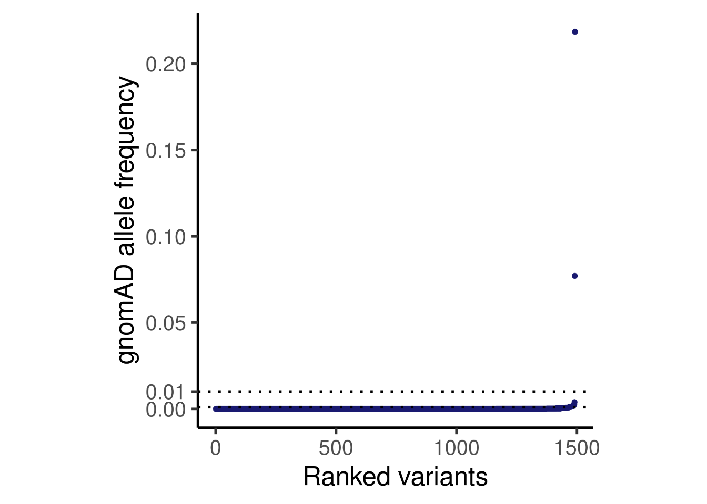
Variants ranked by gnomAD allele frequency. Routinely applied allele frequency thresholds of 1% and 0.1% are indicated. Two frequent variants in DARS2 were confirmed to be pathogenic as a rare combination in cis, confirmed by RNA seq and proteomic analyses as reported by Kopajtich et al., 2021.
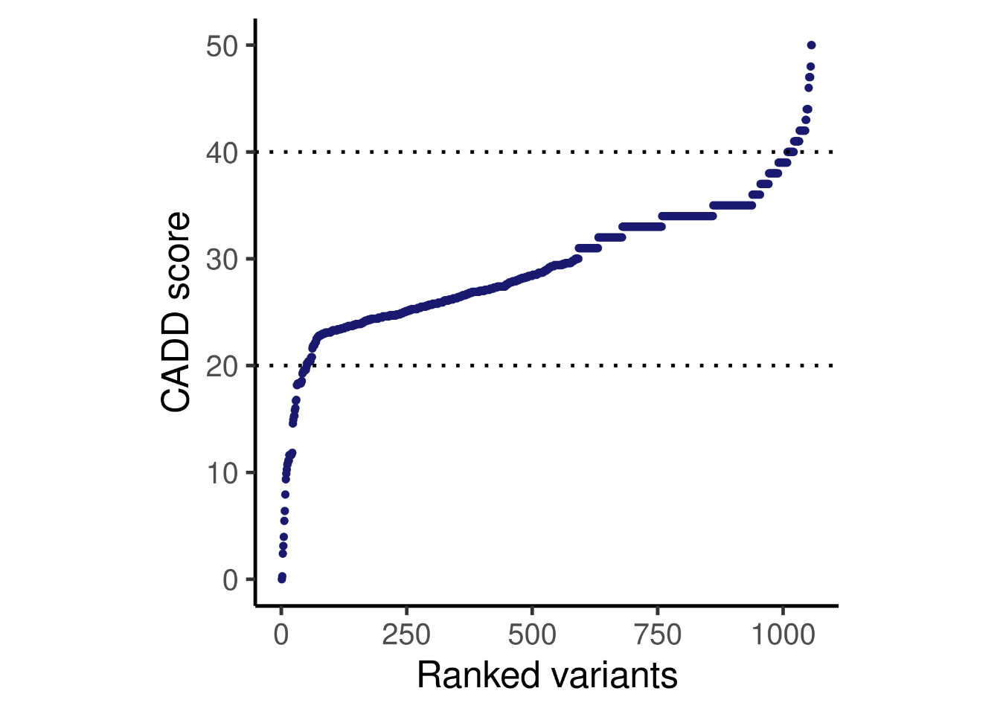
Variants ranked by CADD score. CADD scores ≥20 and ≥40 are indicated. Variants above these thresholds are within the 1% and 0.1% most deleterious substitutions, respectively.
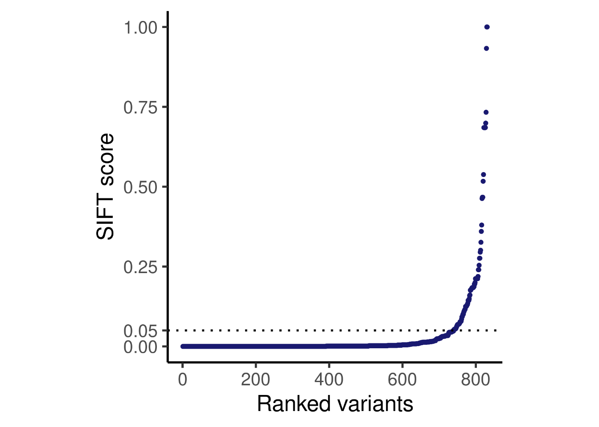
Variants ranked by SIFT score. respectively. SIFT scores <0.05 are predicted to be deleterious.